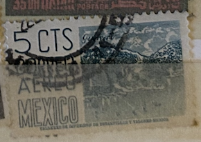
| SOURCE | TITLE| IMAGE MATCH | click to source page |
| sellosmundo.com | 1910 MEXICAN REVOLUTION 1960 "45 Thousand kilometers of roads". Mexico America ref. 296357 | 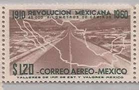 |
| Blogger.com | Chihuahua-Pacific Railway, Mexico - transpress nz | 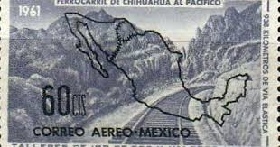 |
| Alamy | MOSCOW, RUSSIA - MARCH 26, 2022: Postage stamp printed in Mexico shows Miguel Hidalgo, Local Images serie, circa 1975 Stock Photo - Alamy | 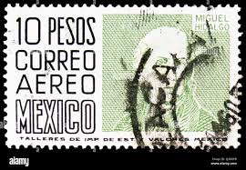 |
| Alamy | Mail mexico Stock Vector Images - Alamy | 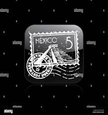 |
| Maps on Stamps | Maps on Stamps : Mexico | A Database of Cartophilately | 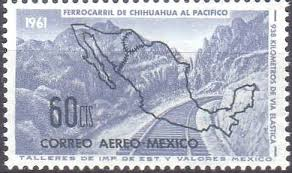 |
| Pngtree | Vector Illustration Of Stylized Mexican Pyramid With Grunge Scratched Stamp Design Concept Photo Background And Picture For Free Download - Pngtree | 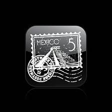 |
| iStock | Map Of Mexico Stamp Stock Photo - Download Image Now - Mexico, Old, Postage Stamp - iStock | 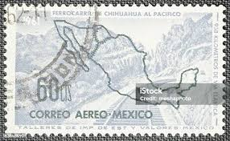 |
| eBay | Greetings From New Mexico RUBBER STAMP, Postcard,Travel,Indian,Words,Vacation.lg | eBay | 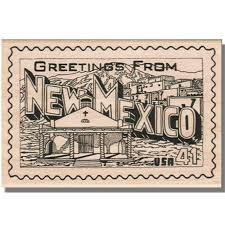 |
| YouTube | Mexico Exports Stamps - S2E5 - YouTube | 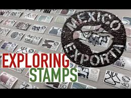 |
| HipStamp | Mexico # C193 - Chiapas - used | Central & South America - Mexico, Air Mail Stamp / HipStamp |  |
| Mark C. Grove | 1350:: Stamps, Mexico, 1950-1952, orange, 25, Courier, side-car, motorcycle, cancelled Sc#E12 - Mark C. Grove | 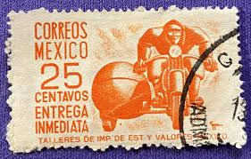 |
| Alamy | Mexico city olympics hi-res stock photography and images - Alamy | 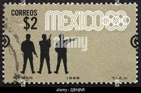 |
| Dreamstime.com | Postage Stamp Mexico, 1983. Integrated System of Communications and Transport Editorial Photo - Image of nostalgic, item: 266328551 | 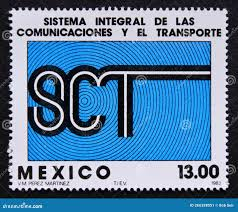 |
| Colnect | Stamp: Michoacan masks (Mexico(Local Images) Mi:MX 1452Z,Sn:MX C477,Yt:MX PA447 📮 | 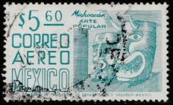 |
| Does anyone collect these Rare USPS Brick Cards? : r/StevesCollections | 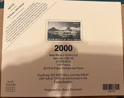 | |
| Gregg Nelson Stamps | C220EVAR Mexico Air Mail Issues - Gregg Nelson Stamps |  |
| Dreamstime.com | 1960 Mexico 50 Centavos "Mayan Relief from Chiapas" Used Stamp Editorial Stock Image - Image of textile, stamp: 414179814 | 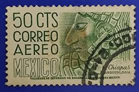 |
| Todocolección | sl) 1984 mexico christmas mnh - Buy Antique stamps of Mexico on todocoleccion |  |
| Shutterstock | 6+ Thousand 1st Stamp Royalty-Free Images, Stock Photos & Pictures | Shutterstock | 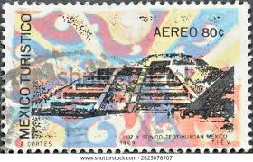 |
| iStock | Mexican Michoacan Masks On A Postage Stamp Stock Photo - Download Image Now - Mexico, Ancient, Postage Stamp - iStock | 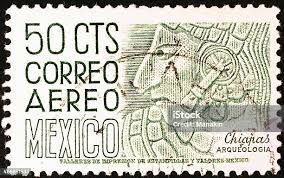 |
| iStock | Mexican Postage Stamps Stock Photo - Download Image Now - Above, Antique, Black Background - iStock | 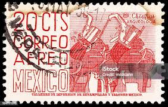 |
| Mexperience | Learn About Your Mexico Visitors Permit, FMM | 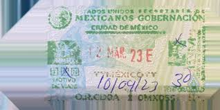 |
| Issuu | Insight Spring 2024: The Travel Edition by Insight Magazine - Issuu | 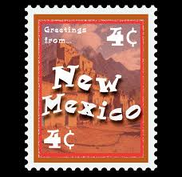 |
| eBay | pa152 Mexico Arquite MNH paper 5 Sc#C287 Mc#C1158y Et#aa152 | eBay | 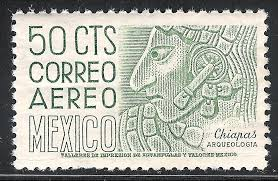 |
| Dreamstime.com | Chiapas Stamp Stock Photos - Free & Royalty-Free Stock Photos from Dreamstime | 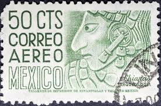 |
| Mystic Stamp Company | 3591 - 2002 34c Greetings From America: New Mexico - Mystic Stamp Company | 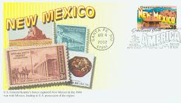 |
| eBay | 6901 MEXICO TRANSPORT RAILROADS TRAINS ENGINS LOCOMOTIVES YV 678+AE219-20 MNH | eBay | 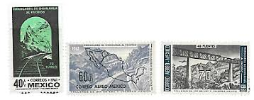 |
| Does Mexico City Still Stamp??? : r/PassportPorn | 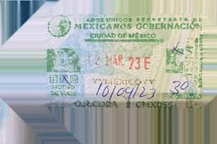 | |
| eBay | Business, Industry, Careers Mexican Stamps for sale | eBay | 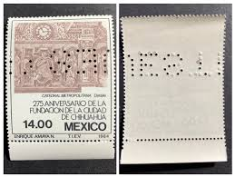 |
| Shutterstock | Mexico Circa 1960 Stamp Printed Mexico Stock Photo 38963161 | Shutterstock | 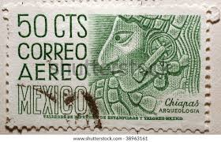 |
| iStock | Mexican Postage Stamp Stock Photo - Download Image Now - Archaeology, Black Background, Chiapas - iStock | 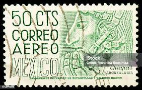 |
| frederic-guerin.fr | Circulated Peso Notes Lot Of 8 Mexico Peso Banknotes - Mixed Series Includes 1, 10, 20, 50, 100, 500, 1000 & 2000 Peso Bills Mexican Paper Currency | 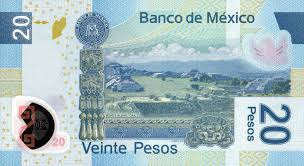 |
| Dreamstime.com | 1,204 Vintage Mexico Stamp Stock Photos - Free & Royalty-Free Stock Photos from Dreamstime |  |
| Banco de México | 1000-peso banknote G, circulation, Banco de México | 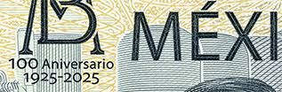 |
| iStock | Postmark Warrior Stock Photo - Download Image Now - Armed Forces, Black Background, Close-up - iStock | 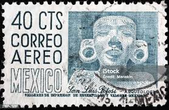 |
| HipStamp | Mexico C193 50c Chiapas 1950-52 used | Central & South America - Mexico, Air Mail Stamp / HipStamp |  |
| HipStamp | Mexico Scott 1010 | Central & South America - Mexico, General Issue Stamp / HipStamp | 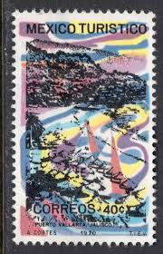 |
| Shutterstock | Maya Letters: Over 429 Royalty-Free Licensable Stock Photos | Shutterstock | 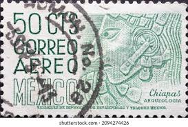 |
| iStock | Mexican Sombrero And Silver Spurs On A Postage Stamp Stock Photo - Download Image Now - iStock | 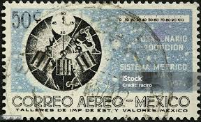 |
| HipStamp | Mexico C69, 30¢ Pegasus Symbol of Flight. Used. VF. (934) | Central & South America - Mexico, Air Mail Stamp / HipStamp | 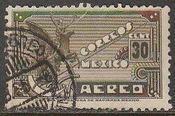 |
| iStock | Chiapas Mexico Aztec On An Old Stamp Stock Photo - Download Image Now - Aztec Civilization, Carving - Craft Product, Mexico - iStock | 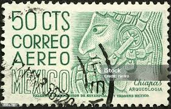 |
| Alamy | Michoacan stamp hi-res stock photography and images - Alamy | 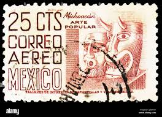 |
| HipStamp | Sc# 883a Wmk 300 Mexico 1954 - 1967 type II issue MNG CV $500.00 | Central & South America - Mexico, General Issue Stamp / HipStamp | 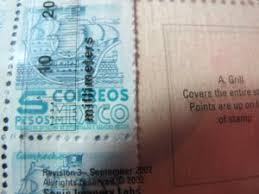 |
| eBay | Mexico-1950 -1952-04-Chiapas Archaeology-50C | eBay | 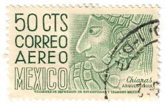 |
| eBay | Mexico 1st International Rocket Mexico-USA O/P 1961 MNH-75 Euro | eBay | 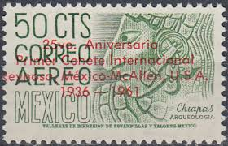 |
| Todocolección | o) 1907 mexico, durango, c.p. diaz coah certifi - Buy Antique stamps of Mexico on todocoleccion | 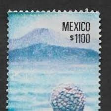 |
| Shutterstock | Mexico Circa 1963 Stamp Printed Mexico Stock Photo 187324247 | Shutterstock | 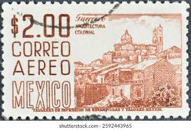 |
| HipStamp | Mexico 1302 three stamps,MNH.Michel 1849. Revolutionary Museum,Chihuahua,1982. | Central & South America - Mexico, Stamp / HipStamp | 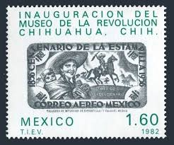 |
| eBay | pa064 Mexico Arquite MNH paper 2 Sc#C220En Mc#1028Dx Et#aa064 perf11 green-opal | eBay | 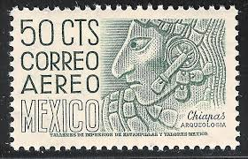 |
| Mexperience | Remembering Delivery Workers on Postman's Day in Mexico | 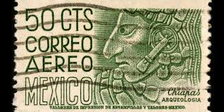 |
| Two Mexican passport stamps (both from Cancún Airport, Quintana Roo), a little over a year apart. Last year's stamp was very faint 🥺, but this year's stamp was nice and crisp 🙌🏼😄. : | 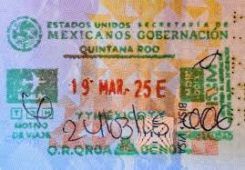 | |
| Mexico Relocation Guide | Don't Move to Mexico BEFORE Considering These 8 Things! - Mexico Relocation Guide | 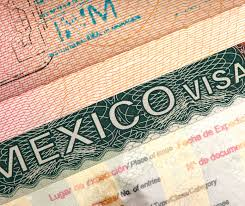 |
| Shutterstock | Postage Stamps On Health: Over 4,187 Royalty-Free Licensable Stock Photos | Shutterstock | 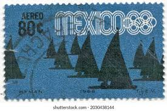 |
| Alamy | Stamp australia flag hi-res stock photography and images - Alamy | 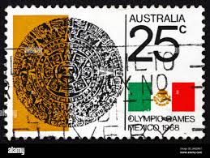 |
| eBay | Mexico SC C85-90, C85 Crease MNH (7ghu) | eBay | |
| iStock | Mexico Postage Stamp Tequila Exports Stock Photo - Download Image Now - Alcohol - Drink, Bottle, Postage Stamp - iStock | |
| eBay | etiangui Transparent Perforation Gauge ( Odontometer ) | eBay |  |
| eBay | 85% OFF SCOTT CATALOG VALUE! MEXICO #C450 MASKS (10) MINT SINGLES. SCV $22.50 | eBay | |
| eBay | O) 1971 MEXICO, WORLD SOCCER CHAMPIONSHIP FOR THE JULES RIMET CUP MEXICO CITY, S | eBay | |
| eBay | pa103 Mexico Arquite MNH paper 2 Sc#na Mc#na Et#aa103 | eBay |